ACE AI TED · 10월 16일
나만의
AI Agent 업무 비서
만들기
대답만 하는 AI 말고, 일을 끝내는 AI.
인천효성남초 양상경
무료 계정은 사용 한도가 있어 중간에 멈출 수 있어요. 막히면 잠시 기다리거나 강사 화면을 보며 따라 보세요.
Enter 또는 → 로 다음 장 · F 전체화면 · T 목차
오늘의 흐름
여섯 걸음.
설명 → 시연 → 직접 해 보기 → 결과 확인
오늘 쓰는 도구
시연은 Codex 앱으로.
OpenAI가 만든 AI Agent 앱. Claude Code 데스크톱 앱도 같은 방식으로 씁니다.
이런 일을 해요
- 내 컴퓨터의 폴더를 열어 그 안의 파일을 읽어요
- 파일을 만들고 고쳐요 (엑셀, 문서)
- 필요하면 브라우저로 웹을 찾아봐요
- 하기 전에 허용해도 될지 물어봐요
미리 알아 둘 것
- 무료 계정은 사용 한도가 있어요. 멈추면 잠시 기다리거나 강사 화면을 보며 따라 보세요
- 오늘 쓰는 파일은 모두 가상 자료예요. 실제 학교·사람과 관계없어요
- Claude Code에서도 같은 방식으로 따라 할 수 있어요
준비 1 / 3
앱 받기.
둘 중 하나만 있으면 됩니다. 강의 시연은 Codex 기준이에요.
Codex 시연 기준
무료 ChatGPT 계정으로 쓸 수 있어요.
「Windows 버전 다운로드」를 누르면 Microsoft Store로 열려요.
Mac이면 같은 페이지에서 Mac 버전을 받으세요.
준비 2 / 3
계정으로 로그인.
무료 계정으로도 실습 가능
Codex 앱을 열고 ChatGPT 계정으로 로그인합니다. 없으면 그 자리에서 만들 수 있어요.
무료 계정은 사용량 제한이 있어요. 멈추면 강사 화면을 보며 따라 보세요.
강사는 평소 유료 계정을 씁니다.

준비 3 / 3
실습 폴더 받아 압축 풀기.
실습폴더 안에 있는 것
11 로컬 작업 - 연구회 회계에이스초 연구회 회계.xlsx · 연구회 상황 메모.md 22 MCP 시연 (선택) - 가정통신문
가정통신문 양식.hwpx (내용은 빈칸) 33 웹 작업 - 학습준비물
학습준비물 빈 양식.xlsx (가격은 빈칸) 44 미니 비서
AGENTS.md · HOME.md · 카드 3장
앱에서는 실습폴더 자체를 엽니다. 미니 비서만 '4 미니 비서' 폴더를 따로 열어요.
챗봇과 AI Agent
챗봇은
묻고 답한다.
파일을 올리면 읽어 주고, 결과를 내려받게 해 줍니다. 그다음은 내 몫이에요.
AI가 하는 일
읽고, 생각하고, 답을 글로 쓴다
내가 하는 일
자료를 찾아 올리고, 답을 받아 내 파일에 옮긴다
챗봇과 AI Agent
요즘 챗봇도
조금은 Agent.
챗봇과 Agent의 경계는 점점 흐려지고 있어요.
챗봇 안에서
웹을 찾아보거나, 계산을 돌려 보거나, 파일을 만들어 주기도 한다.
다만 채팅창 안에서 일어나는 일이에요.
오늘 쓰는 Agent 앱
내 컴퓨터의 폴더로 들어와서 일한다.
파일을 올리고 내려받을 필요가 없어요.
Codex · Claude Code
내 컴퓨터를
직접 조작한다.
챗봇은 답을 주기만 해요. Agent는 터미널(명령어)과 도구로 일하면서 내 컴퓨터를 직접 조작합니다.
터미널 명령파일 열기, 계산, 프로그램 실행
도구엑셀 읽고 쓰기, 브라우저, 문서
내 컴퓨터사람이 하던 클릭과 입력을 대신
이름 정리
채팅 앱, 일하는 앱,
그리고 모델.
모델은 두뇌, 앱은 그 두뇌를 쓰는 몸이에요. 같은 두뇌를 채팅 앱으로도, 일하는 앱으로도 씁니다.
| OpenAI | Anthropic | ||
|---|---|---|---|
| 채팅 앱 (묻고 답한다) | ChatGPT | Claude | Gemini |
| 일하는 앱 (Agent) | Codex ← 오늘 | Claude Code | Gemini CLI |
| 모델 (두뇌) | GPT | Claude | Gemini |
모델 서열
위로 갈수록 똑똑하고,
느리고, 비싸다.
앱 안에서 모델을 고를 수 있어요. 무료 계정은 고를 수 있는 모델이 적습니다.
GPT (Codex · ChatGPT)
- GPT-6 Astra — 가장 똑똑함
- GPT-6.1 Sol — 최신 주력 강사 시연
- GPT-6 Sol · GPT-6 Luna
- 이전 세대: 5.6 Sol · 5.6 Terra 오늘 실습 · 5.6 Luna
Claude (Claude Code · Claude)
- Fable 5.1 — 가장 똑똑함
- Opus 5.5
- Sonnet 5.5
- Haiku 5.5 — 가장 빠름
작동 원리
나는 말로,
AI는 명령으로.
명령어는 몰라도 됩니다. 평소 말투로 부탁하면 AI가 필요한 명령을 골라 실행해요.
- "이 폴더에 어떤 파일이 있는지 알려 줘."
폴더 살펴보는 중… > dir 파일 3개를 찾았어요.
Agent의 장점
내 폴더의 파일을
읽고, 고치고, 만든다.
📂 읽는다
복사·붙여넣기 없이 폴더의 파일을 직접 연다
✏️ 고친다
엑셀 칸을 채우고, 문서를 손본다
📄 만든다
결과가 채팅이 아니라 파일로 남는다
같은 부탁, 다른 결과
"이 자료 정리해 줘."
| 챗봇 | AI Agent | |
|---|---|---|
| 자료 | 파일을 내가 올리거나 내용을 붙여 넣음 | 폴더의 파일을 직접 열어 읽음 |
| 결과 | 채팅창의 글 → 내가 옮겨 적음 | 파일에 바로 저장됨 |
| 다음 일 | 새로 설명해야 함 | 폴더의 메모를 읽고 이어서 함 |
미리 보기
MCP를 꽂으면
더 넓어진다.
법령 검색, 웹 브라우저, 캘린더처럼 Agent가 쓸 수 있는 도구를 더하는 방법. 3부에서 다시 봅니다.
안전
로컬이어도
완벽하진 않다.
AI가 읽은 파일 내용은 생각하는 과정에서 외부 AI 모델로 전달될 수 있어요.
📁 폴더를 좁게
작업에 필요한 폴더만 열어 준다
✋ 승인으로 관리
"허용할까요?"를 읽고 누른다
🔒 민감 자료 빼기
학생 개인정보·민감한 문서는 넣지 않는다
앱 사용법 · 1 / 7
앱 화면은 네 부분.
앱 화면에 따라 이름이 조금 다를 수 있어요.

- 프로젝트(폴더) — 지금 AI가 일하는 폴더
- 대화 — AI가 무엇을 하는지 한 줄씩 보여요
- 입력창 — 여기에 부탁을 적어요
- 변경 사항 — 바뀐 파일이 모여요
앱 사용법 · 2 / 7
먼저 폴더를 연다.
AI에게 "여기가 네 작업 공간이야" 하고 정해 주는 단계예요.
- 왼쪽 위 파일 → 폴더 열기
- 바탕화면의 실습폴더를 고르고 폴더 선택
- "이 폴더를 신뢰할까요?"가 뜨면 신뢰
번호 폴더가 아니라 실습폴더 자체를 열어요. 그 안의 파일을 AI가 다 볼 수 있어요.
연 폴더가 곧 프로젝트예요. 다음에 같은 폴더를 다시 열면 이어서 작업합니다.
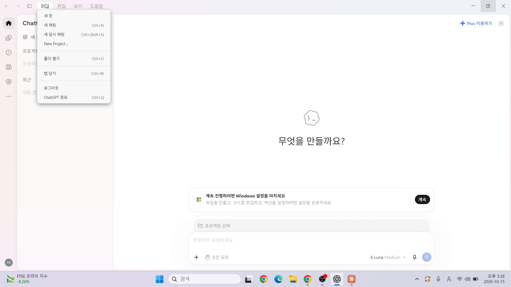
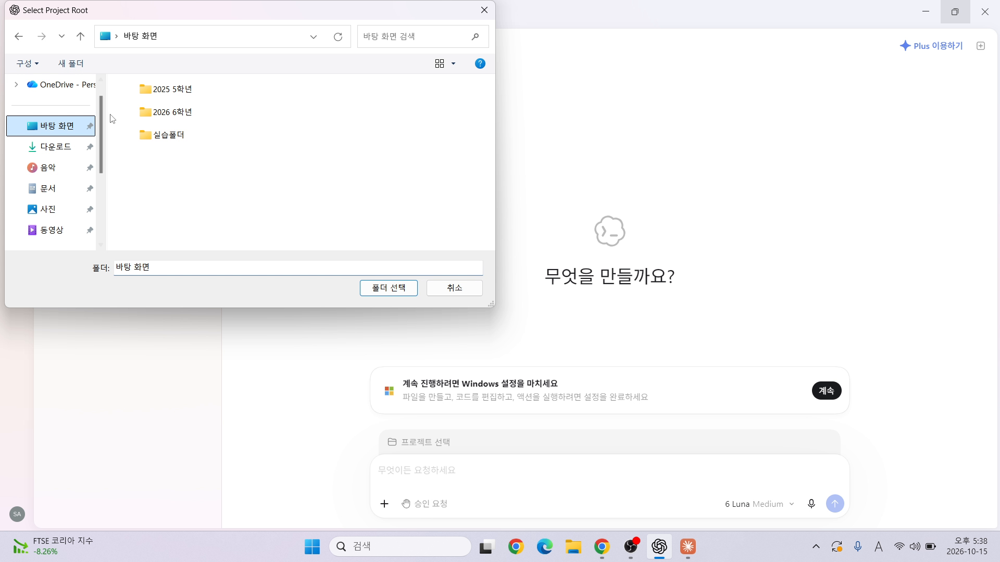
앱 사용법 · 3 / 7
"목표"는 오늘 안 써요.
입력창 왼쪽 +를 누르면 목표가 있어요. 목표를 정해 주면 끝날 때까지 알아서 계속 돌리는 모드예요.
오늘은 이 모드를 쓰지 않고, 입력창에 바로 부탁합니다.
긴 일을 통째로 맡길 때 쓰는 기능이라는 것만 알아 두세요.
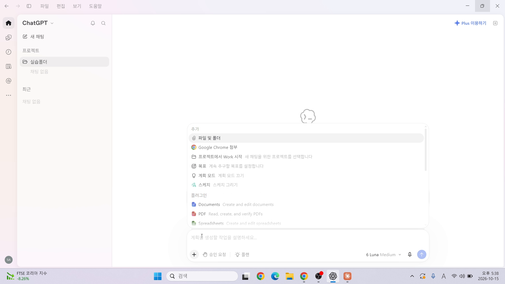
앱 사용법 · 4 / 7
얼마나 맡길지 정한다.
입력창 아래 손 모양 메뉴. 오늘은 화끈하게 전체 권한으로 갑니다.
승인 요청
외부 파일 수정 및 인터넷 사용 시 항상 확인합니다
나 대신 승인 불안하면
AI 검사관이 대신 보고, 위험해 보이는 작업에만 나에게 물어요
전체 권한 오늘
인터넷과 컴퓨터의 모든 파일에 제한 없이. 묻지 않고 바로 해요
불안하면 나 대신 승인
"허용할까요?" 창이 뜨면 AI가 무엇을 하려는지 한 번 읽어 보고 한 번만 허용을 누르세요.
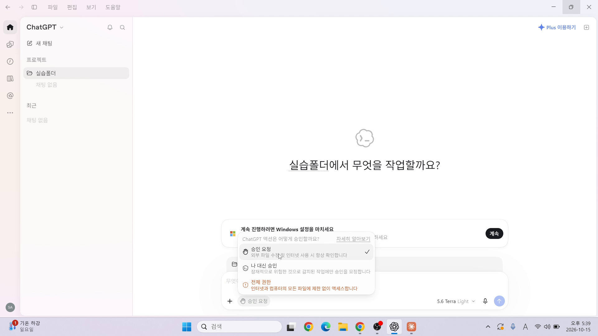
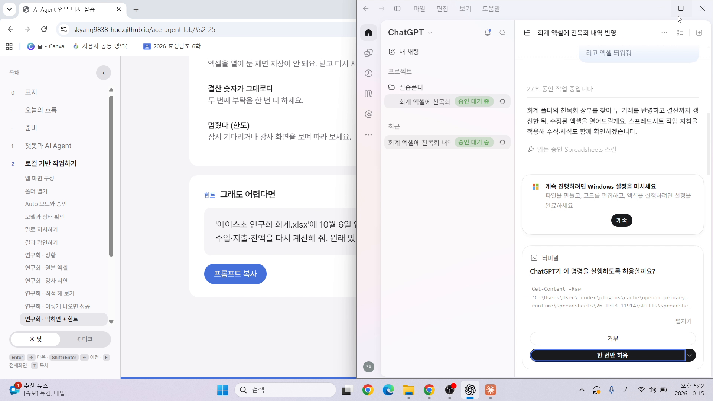
앱 사용법 · 5 / 7
모델을 고르고,
상태를 본다.
앱 화면에 따라 이름이 조금 다를 수 있어요.
모델 · 추론 정하기
입력창 오른쪽 아래 모델 메뉴에서 5.6 Terra, 추론은 Light로 맞춥니다.
Luna가 아래, Terra가 위인데 차이가 크지 않아요. 빨리 하려고 Light로 갑니다.
/status 입력
입력창에 /status를 치면 지금 모델, 사용량, 상태가 보여요.
남은 사용량(예: 29% 남음)도 보여요. 무료는 금방 줄어요.
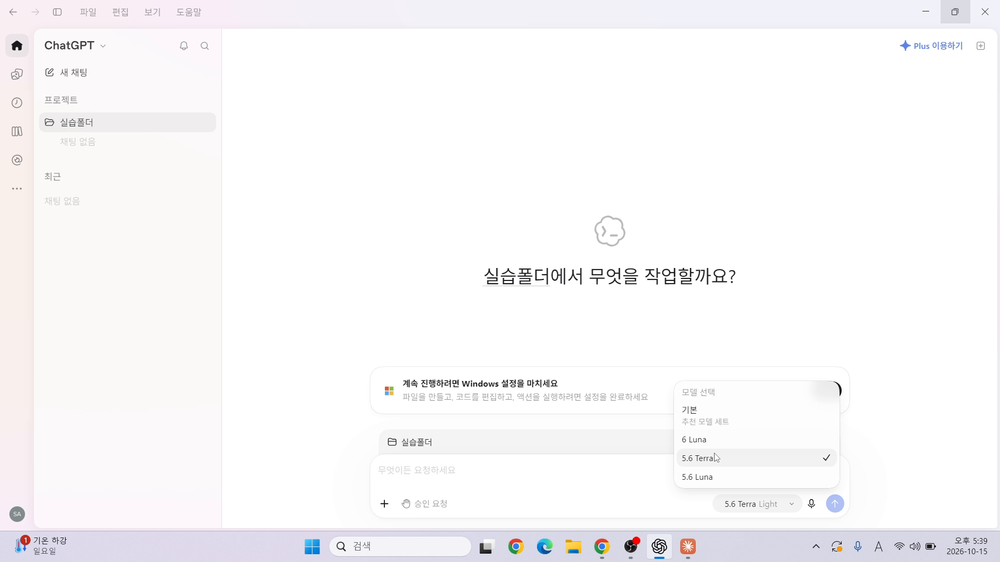
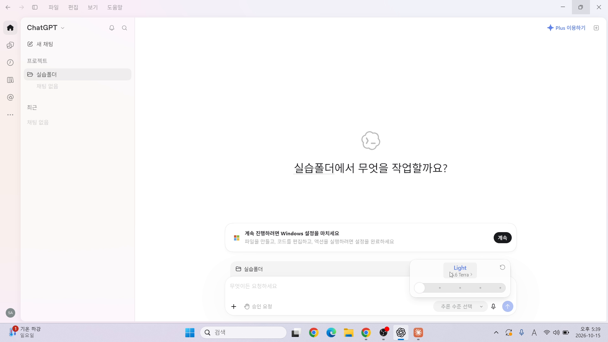
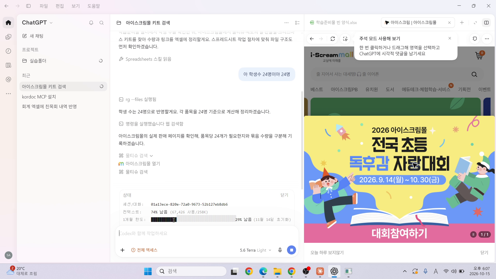
앱 사용법 · 6 / 7
평소 말투로 부탁한다.
명령어는 몰라도 돼요. 사람에게 부탁하듯 적고 Enter.
- 회계 파일에 빠진 입금 하나 넣어 줘.

앱 사용법 · 7 / 7
끝나면 내 눈으로 확인한다.
- 앱에서 — 변경 사항에 바뀐 파일이 떠요
- 폴더에서 — 파일을 직접 열어 봐요
AI가 "다 했어요"라고 해도, 파일을 열어 보기 전엔 끝이 아니에요.

앱 사용법 · Claude
Claude 앱도 똑같아요.
Claude 앱(Claude Code)으로 하는 분은 이것만 다르고 나머지는 같아요.
- 파일 → 폴더 열기 → 바탕화면 실습폴더
- 입력창 아래 모드에서 자동
- 모델은 유료면 Opus 5.5 + 노력 중간. 더 좋은 모델도 괜찮아요
- 나머지는 Codex와 같아요
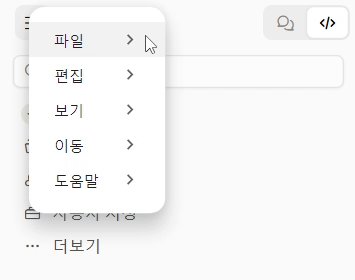
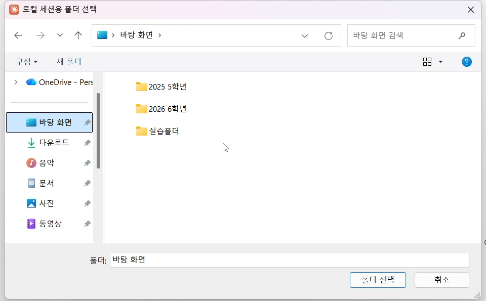
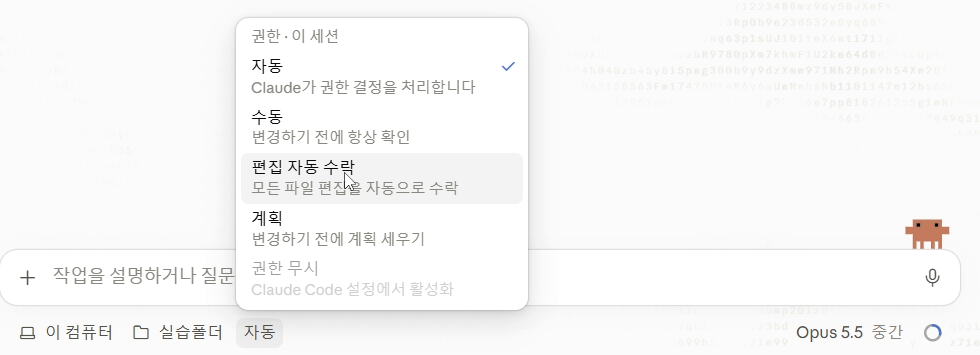
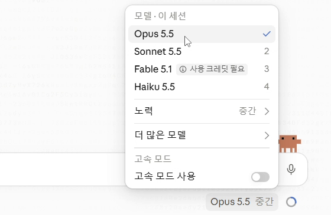
로컬 작업 · 연구회 회계
결산했는데,
빠뜨린 게 있다.
모두 함께상황
- 나는 에이스초 연구회 총무
- 3~4월 통장 내역 4건과 결산을 엑셀에 정리해 뒀다
- 그런데 10월 6일 입금 50만 원을 깜빡했다
- 10월 15일 떡값 10만 원도 아직 안 적었다
이렇게 해요
- 앱에서 실습폴더 열기
- '1 로컬 작업' 안의 회계.xlsx를 눌러 오른쪽 칸에 띄워 두기
- 한 번에 부탁: 빠진 수입·지출 반영 + 다시 결산
- 오른쪽 칸에서 숫자가 바뀌는지 보기
로컬 작업 · 연구회 회계
에이스초 연구회 회계.xlsx
| 수입 | 지출 | 잔액 | ||
|---|---|---|---|---|
| 990,000 | 470,000 | 520,000 |
| 입금일자 | 입금금액 | 입금자명 |
|---|---|---|
| 3/12 | 500,000 | 인천에이스초 |
| 4/12 | 490,000 | 인천에이스초 |
| 사용일자 | 사용금액 | 사용내역 |
|---|---|---|
| 3/6 | 150,000 | 꽃다발 구매 |
| 3/20 | 320,000 | 환영회 식대 |
이 기록은 그대로 둡니다. 빠진 두 건만 더해요.
로컬 작업 · 연구회 회계
먼저, 강사 화면을 보세요.
시연볼 것
- AI가 엑셀을 직접 열어 내용을 파악하는 장면
- 새 줄이 들어가고 결산 숫자가 바뀌는 순간
로컬 작업 · 연구회 회계
한 번에
부탁해 보세요.
직접 해 보기1빠진 기록 반영 + 다시 결산
10월 6일에 50만 원이 추가 입금됐는데 깜빡했다. 10월 15일에는 떡값으로 10만 원을 지출했다. 회계 파일에 반영하고, 맨 위 결산도 다시 계산해 줘.복사됨 ✓
엑셀을 오른쪽 칸에 띄워 두면 바뀌는 게 보여요. 생각보다 오래 걸려요(몇 분).
로컬 작업 · 연구회 회계
이렇게 나오면 성공!
원래 적힌 4줄은 그대로, 새 줄 2개가 더해져야 해요. 오른쪽 칸에서 맨 위 결산 숫자까지 확인하세요.
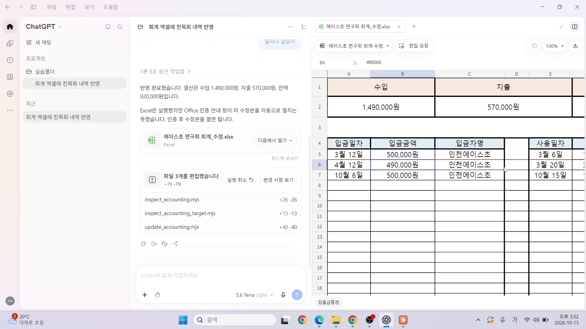
중요한 건 속도가 아니라, 맡겨 놓고 나는 다른 일을 할 수 있다는 것.
MCP 시연 · 먼저 알기
MCP를 연결하면,
할 수 있는 일이 폭발적으로 는다.
MCP는 AI Agent의 크롬 확장 프로그램 같은 것입니다.
정확히는 AI와 바깥 도구를 잇는 공통 규격이에요. 규격이 같아서 한 번 만든 도구를 여러 AI 앱이 같이 씁니다.
📅 캘린더 · 🎨 캔바
공문 일정 넣기, 안내 포스터 초안
⚖️ 법령
법제처 법령·조문을 찾아 읽는다
🌐 웹 브라우저
사이트를 열어 찾고 고른다
MCP 시연 · 설치
설치는 이렇게.
보기만 하세요.
KorDoc은 한글(hwp·hwpx) 문서를 읽고 채우는 MCP예요. 주소만 주면 AI가 알아서 깝니다.
강사 시연 · 보기만- 구글에서 kordoc 검색 → GitHub 페이지
- 주소를 복사해 앱에 붙이고 "이거 MCP로 설치해 줘"
- Node.js 설치 창이 뜨면 기다리기
- 등록 승인 창 → 한 번만 허용
- 설치 완료 (약 3분)
github.com/chrisryugj/kordoc
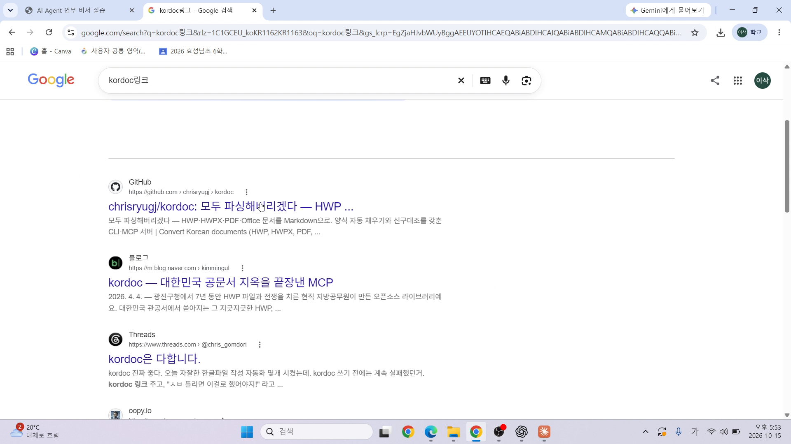
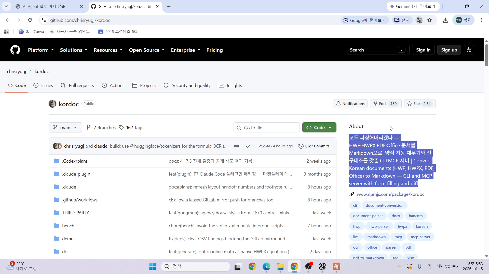
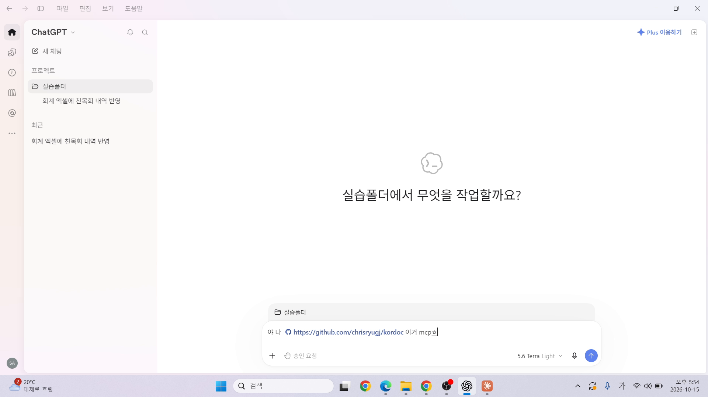
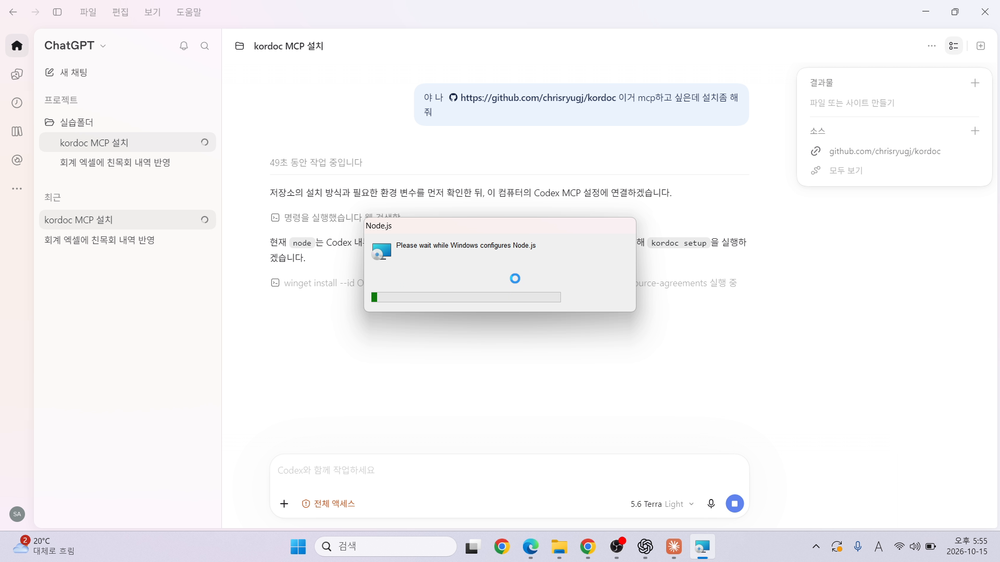
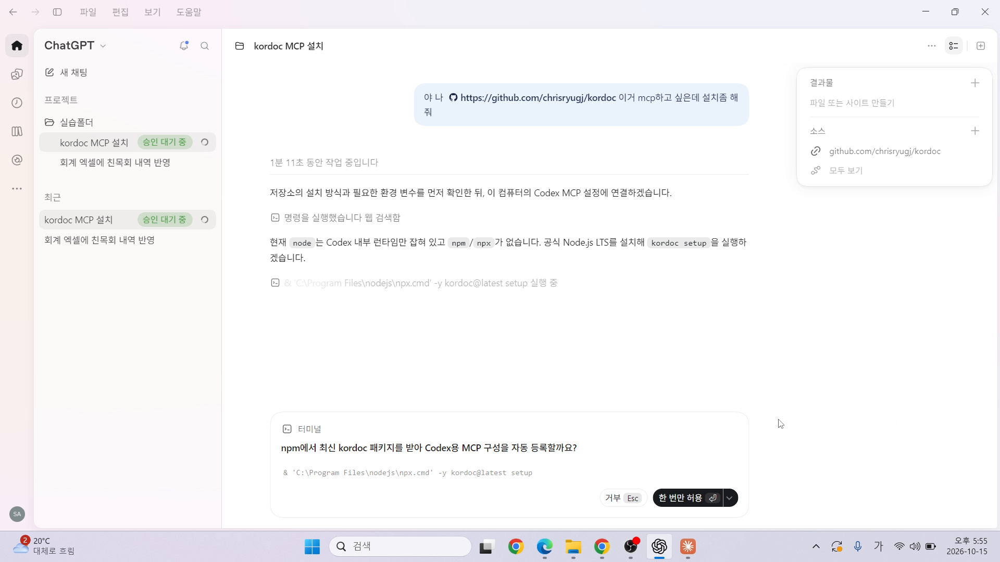
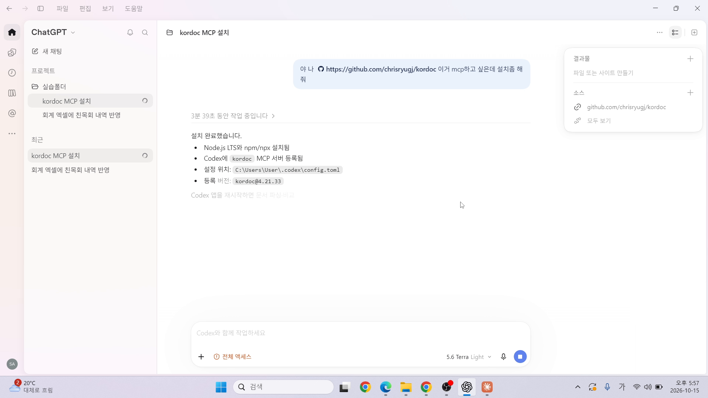
MCP 시연 · 가정통신문
빈 가정통신문 양식을
채운다.
시연 · 선택상황 · 에이스초등학교
- 사업: 디지털 새싹 프로그램
- 날짜: 1월 2일 ~ 5일
- 시간: 9시 ~ 12시
- 경비: 무료
실습폴더 안 '2 MCP 시연 (선택) - 가정통신문'에 빈 양식이 있어요. 해 보고 싶은 분만 따라 하세요.
이렇게 해요
새 채팅을 열고, 프롬프트를 복사하지 말고 직접 쳐 보세요. 내 일에 쓸 때도 결국 내가 써야 하니까요.
계획 모드를 켜도 좋아요. 강사 시연은 빠르게 6.1 Sol이나 Astra로 합니다.
들어갈 것: 어떤 파일을 · 무슨 내용으로 · 없는 건 지어내지 말 것
힌트이렇게 써도 돼요
kordoc으로 '가정통신문 양식.hwpx'를 디지털 새싹 프로그램 안내문으로 채워 줘. 기간은 1월 2일부터 5일까지, 시간은 9시부터 12시까지, 경비는 무료야. 내가 주지 않은 내용은 지어내지 말고 빈칸으로 둬.복사됨 ✓
MCP 시연 · 결과
내가 준 내용과 대조한다.
📄 파일 열기
앱 미리보기는 hwpx를 아직 못 보여 줘요. 한글로 직접 열어 본다
🔎 내용 대조
날짜·시간·경비가 내가 준 그대로인지
🧑🏫 판단은 사람이
빈칸·고칠 것·보낼지 여부는 교사가 정한다
"내가 주지 않은 건 지어내지 마" — 하지 말아야 할 일도 프롬프트에 적는다.
MCP · 짧은 시연
법령도
직접 찾아 읽는다.
시연 · 따라 하지 않아도 돼요기억으로 답하지 않고 법제처 원문을 찾아 보여 줘요. 강사가 채팅으로 물어보는 모습만 봅니다.
웹 작업 · 가격 채우기
빈칸은 AI가 찾아서 채운다. 도전
6학년 1반 24명. 행사 키트 3종과 교실 소모품을 예산 20만 원 안에서 산다. Agent가 아이스크림몰을 직접 열어 검색하고 비교한다.
| 내용 | 규격 | 수량 | 단가 | 금액 | 상품 링크 |
|---|---|---|---|---|---|
| 독도의날 만들기 키트 | 1인용 | 24 | ? | ? | ? |
| 한글날 만들기 키트 | 1인용 | 24 | ? | ? | ? |
| 크리스마스 만들기 키트 | 1인용 | 24 | ? | ? | ? |
| 물티슈 | 캡형 70~100매, 10팩 묶음 | 1 | ? | ? | ? |
| 각티슈 | 200매 이상, 6개 이상 묶음 | 1 | ? | ? | ? |
앱에서 연 실습폴더 그대로, 안의 '3 웹 작업 - 학습준비물' 파일을 씁니다. 독도의날·한글날·크리스마스 키트는 24명분, 물티슈·각티슈는 한 묶음씩. 전체 합계 20만 원 이하.
웹 작업 · 첫 번째 부탁
상황만 주고 맡긴다.
새 채팅에서 시작하세요.
P4-1예산 안에서 찾아 채우기
학습준비물 엑셀에 물티슈·각티슈·독도·한글날·크리스마스 키트, 학생 수(24명)에 맞춰 아이스크림몰에서 찾아서 링크랑 엑셀에 넣어 놔. 전체 20만 원 안으로.복사됨 ✓
웹 작업 · Agent가 보는 화면
사람처럼 검색하고, 고른다.
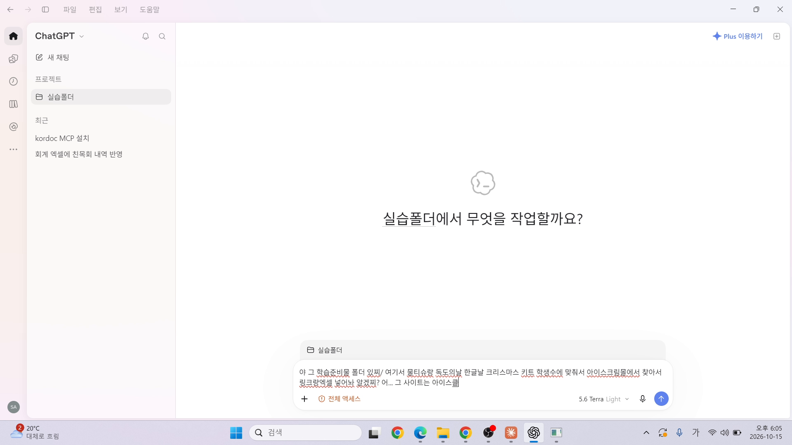
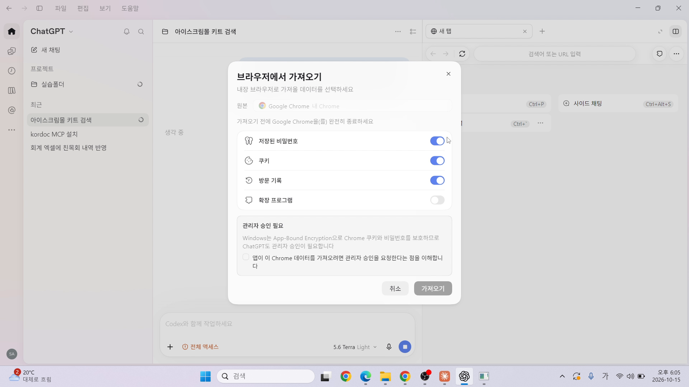
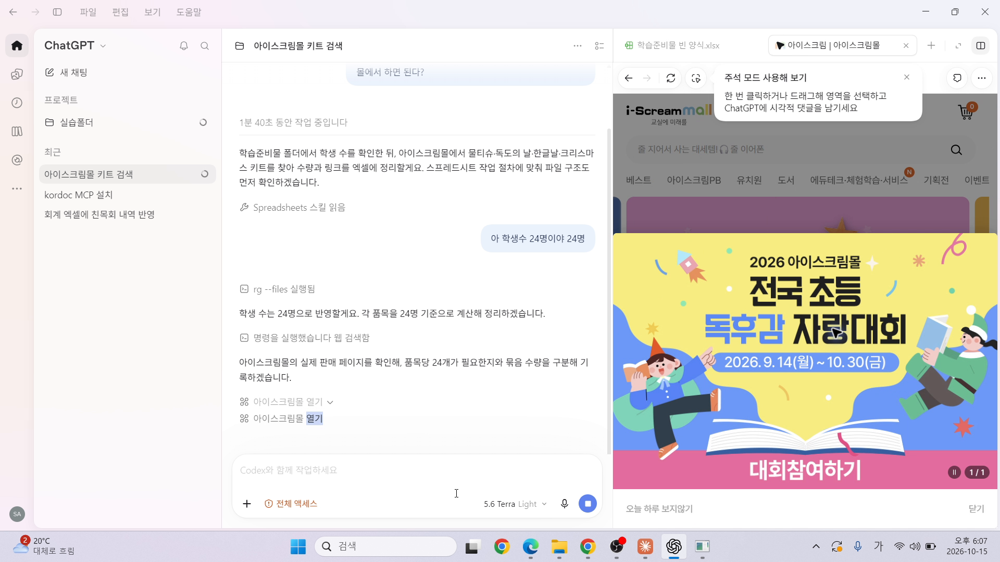


미니 비서
대화는 잊어도,
파일은 기억한다.
도전
새 대화를 열어도 폴더의 파일을 읽고 이어서 해요. 파일 세 겹이면 비서가 됩니다.
AGENTS.md폴더를 열면 앱이 자동으로 읽는 규칙. "HOME.md부터 읽어라"
HOME.md내 소개 · 카드 목록
카드/일마다 한 장씩
파일 내용은 앱에서 직접 열어 봅니다.
미니 비서 · 준비
'4 미니 비서'를 새로 연다.
- 왼쪽 위 파일 → 폴더 열기
- 실습폴더 안의 4 미니 비서를 고르고 폴더 선택
- "이 폴더를 신뢰할까요?"가 뜨면 신뢰
- "4 미니 비서에서 무엇을 작업할까요?"가 보이면 준비 끝
이번에는 실습폴더 자체가 아니라 4 미니 비서 폴더만 열어요.
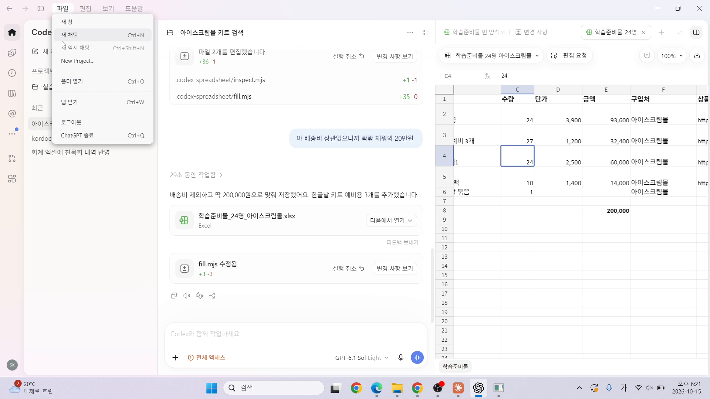
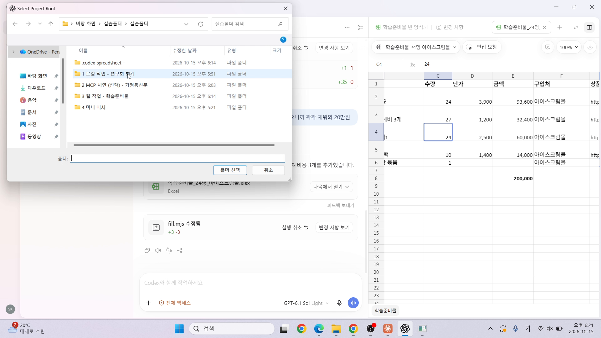
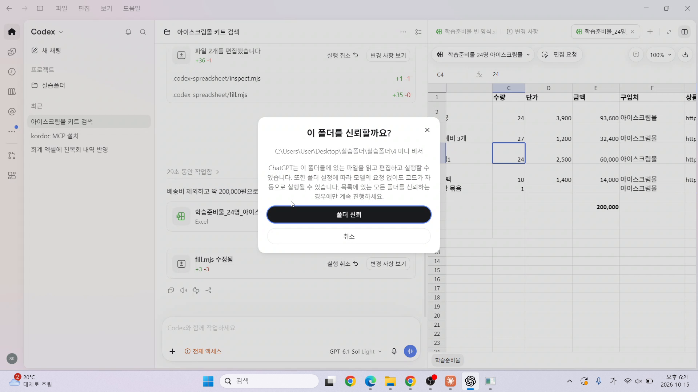
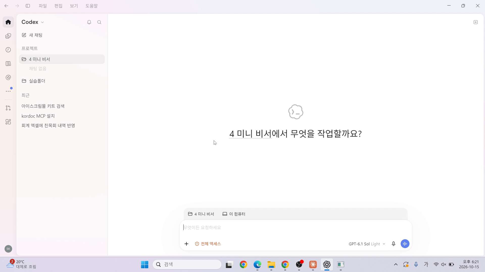
미니 비서 · 첫 번째
구글 캘린더부터 꽂는다.
비서가 내 일정을 보고, 일정도 넣을 수 있게 돼요.
- 왼쪽 아래 맞춤 설정 → 플러그인
- 목록에서 Google Calendar를 찾아 +
- 구글 계정으로 로그인하고 허용
- 왼쪽 '설치됨'에 Google Calendar가 보이면 끝
채팅으로 "구글 캘린더 연결해 줘"라고 해도, Codex가 플러그인 화면에서 추가하라고 안내해요.
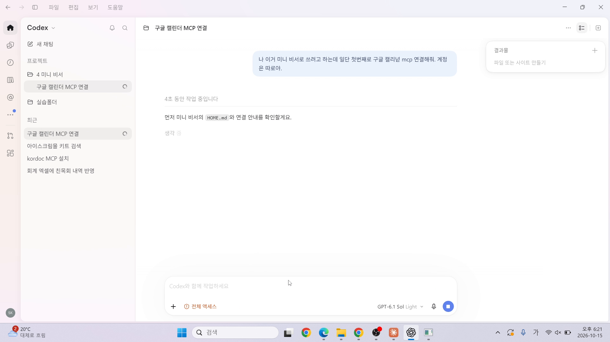
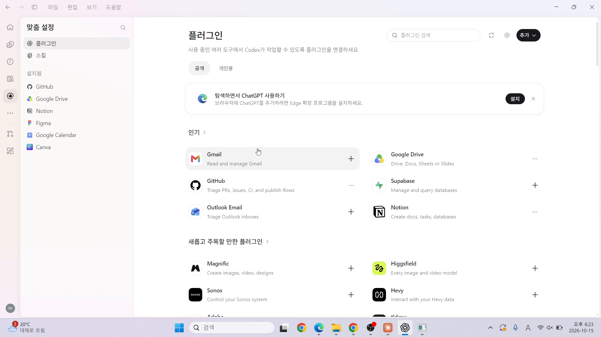
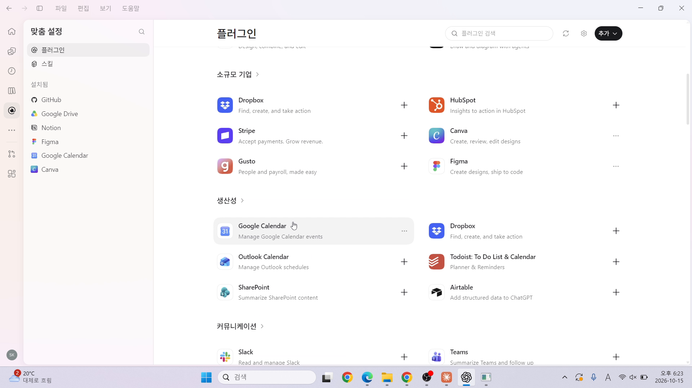
미니 비서 · 두 번째
"그날 나 괜찮아?"
내 캘린더를 보고 답하고, 비어 있으면 일정까지 넣어 줘요.
P5-2일정 잡기
11월 7일에 친구들이 놀자고 하는데, 이때 일정 나 괜찮아? 비어 있으면 캘린더에 넣어 줘.복사됨 ✓
시간을 묻는 질문 창이 뜨면 하나 고르고 보내기.
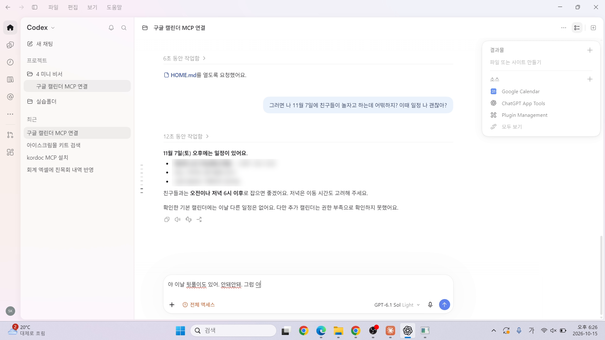
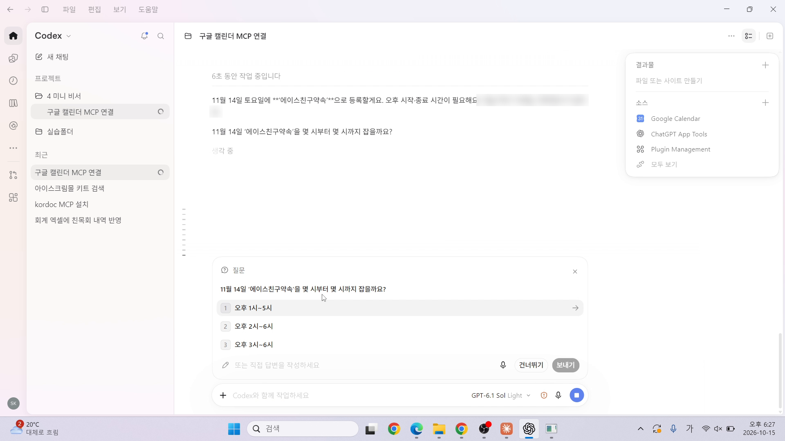
미니 비서 · 세 번째
"오늘 뭐 해?"
짧게 물어도 규칙(AGENTS.md)대로 카드를 읽고, 캘린더 일정도 같이 봐요.
P5-3브리핑
오늘 뭐 해?복사됨 ✓
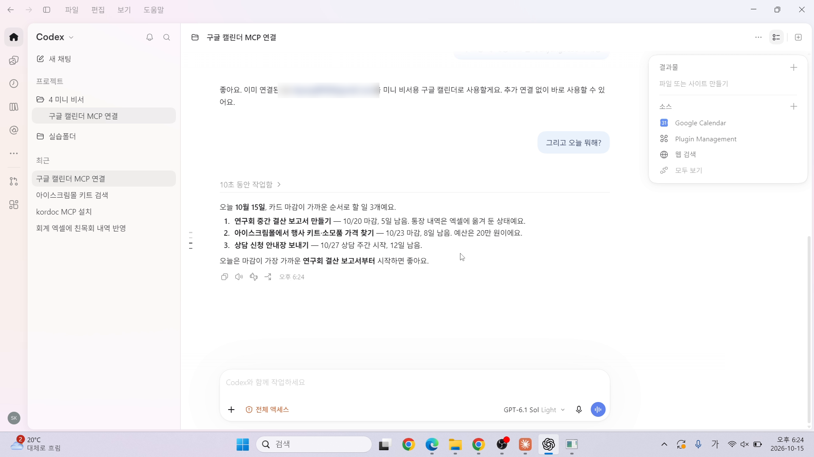
미니 비서 · 네 번째
끝났다고 말하면,
카드가 바뀐다.
P5-4끝난 일 반영
나 1번 2번 했어. 체크해 줘.복사됨 ✓
답만 보지 말고 카드·HOME.md를 열어 실제로 바뀌었는지 보세요.
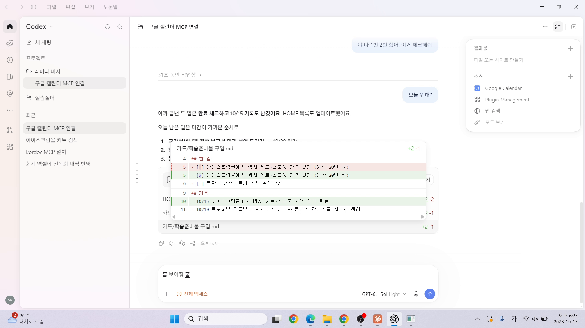
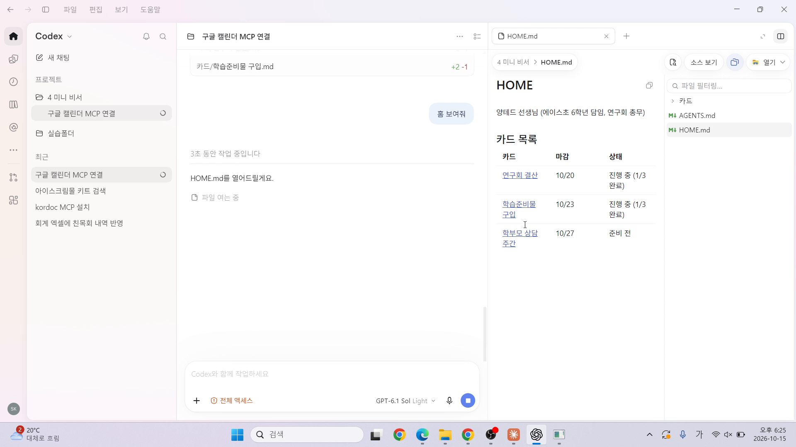
미니 비서 · 다섯 번째
카드에 있는 일,
바로 시킨다.
카드 '연구회 결산'의 다음 할 일: 교감 선생님께 보고서 미리 보여 드리기.
P5-5교감 선생님 메시지
교감 선생님께 결산 보고서를 미리 보여 드리는 메시지를 써 줘. 공손하고 짧게.복사됨 ✓
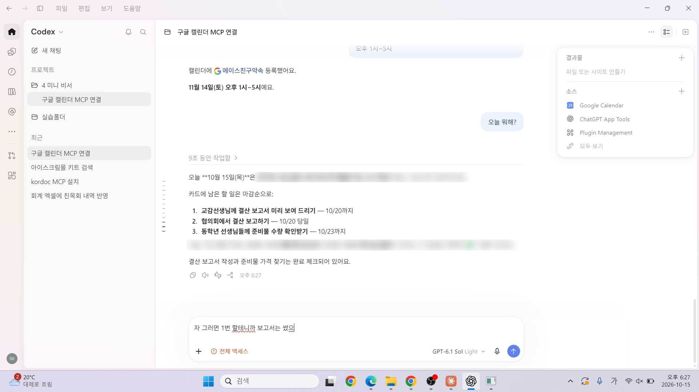
공부법
잘 맡기는 법.
네 가지만 넣으면 됩니다.
연구회 회계 정리해 줘.
'에이스초 연구회 회계.xlsx'를 읽고 항목별 지출 표를 만들어 '결산 보고서.md'로 저장해 줘. 다 하면 원본과 숫자를 검산해 줘.
공부법
일이 바뀌면 새 대화.
한 대화에 일을 계속 쌓으면 앞 내용과 섞여 엉뚱한 답이 나와요.
새 대화로 끊기
연구회 결산이 끝났으면 가격 채우기는 새 대화에서. 앞의 맥락을 끊어 주세요.
기억할 건 파일로
계속 알아야 할 것은 대화가 아니라 AGENTS.md나 카드에 적어 두세요. 새 대화도 그 파일을 읽어요.
추천: 이것저것 만들기(바이브 코딩)보다 내 비서 하나를 만들어 많이 써 보세요.
공부법
강사는
터미널로 써요.
같은 Claude Code·Codex를 앱 대신 VS Code나 터미널에서 쓸 수도 있어요. 훨씬 가볍고 빨라요.
기회가 되면 따로 알려 드릴게요.
공부법
헷갈리는 세 가지.
| AGENTS.md | 폴더를 열면 자동으로 읽는 규칙. 오늘 미니 비서의 업무 지침 |
| Skills | 필요할 때 꺼내 쓰는 작업 설명서. 자주 하는 일의 순서를 적어 둔 것 |
| MCP | AI에게 꽂아 주는 도구 플러그. 한글·브라우저·캘린더 |
공부법
안전하게 쓰기.
🔒 개인정보
학생 이름·연락처·성적은 AI에게 넣지 않기.
✋ 허용 창 읽기
무엇을 바꾸려는지 읽고 누르기. 모르면 거절해도 돼요.
📁 원본 지키기
중요한 파일은 복사본으로 실습하고, "원본은 건드리지 마"를 적기.
이제,
맡겨 보세요.
질문은 언제든 채팅창에.